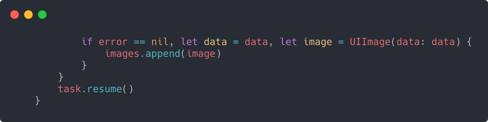

Іноді замість того, щоб просто поміщати завдання в чергу, вам потрібно обробити групу завдань. Всі вони не повинні запускатися одночасно, але вам потрібно знати, коли вони закінчились. Для такого сценарію Apple пропонує dispatch groups.
DispatchGroup
Клас з відповідним ім'ям DispatchGroup - інструмент, який варто використовувати, коли вам потрібно відстежувати виконання групи завдань.
Для початку потрібно провести ініціалізацію DispatchGroup. Якщо у вас є задача і ви хочете відстежувати її як частину групи, ви можете передати її в групу в якості аргументу асинхронного методу (async):
Як видно з наведеного вище прикладу коду, групи не прив'язані до однієї dispatch queue. Ви можете використовувати одну групу, але відправляти завдання в кілька різних черг, в залежності від пріоритету задачі, яку необхідно виконати. DispatchGroups надають метод notify(queue :), який ви можете використовувати, щоб отримувати повідомлення, як тільки завершиться кожне з відправлених завдань.
Note: Повідомлення саме по собі є асинхронним, тому після виклику повідомлення можна відправити більше завдань групі, якщо раніше надіслані завдання ще не завершені.
Ви можете відмітити, що метод notify приймає чергу в якості параметра. Коли всі завдання завершені, надане вами замикання буде виконано у зазначеній черзі. Показаний виклик повідомлення є найпоширенішою версією виклику, але є і інші версії, які, наприклад, дозволяють вам вказати якість обслуговування QoS.
Синхронне очікування
Замість методу notify ви можете використовувати метод wait для групи. Це синхронний метод, який блокує поточну чергу до завершення всіх завдань. Він приймає необов'язковий параметр, який вказує, як довго чекати завершення завдань. Якщо він не вказаний, то за замовчуванням час очікування нескінченний:
Note: Пам'ятайте, wait блокує поточний потік; ніколи не викликайте wait в головній (main) черзі.
У наведеному вище прикладі ви даєте завданням до 60 секунд, щоб вони змогли завершити свою роботу до того, як виконається блок wait.
Важливо пам’ятати, що завдання, як і раніше будуть виконуватися навіть після виклику блоку wait. Щоб переконатися в цьому на практиці, перейдіть до початкових проектів в прикріплених матеріалах до цієї глави і відкрийте playground під назвою DispatchGroup.playground.
В playground додано два завдання в групу: одне з них займає 10 секунд (завдання 1), а інше має дві секунди на виконання:
Потім група синхронно очікує завершення:
Запустіть playground і подивіться на вивід з правого боку вікна Xcode. Ви повинні побачити повідомлення про те, що завдання 1 і 2 запущені. Через дві секунди ви побачите повідомлення про те, що завдання 2 виконано, а через три секунди - повідомлення «I got tired of waiting».
З прикладу видно, що завдання 2 заморожено тільки на дві секунди, і воно може бути виконано, тому, що група буде очікувати 5 секунд, але цього недостатньо для завершення завдання 1, тому буде надруковано повідомлення про закінчення часу очікування.
Однак, якщо ви почекаєте ще п'ять секунд - ви побачите повідомлення про завершення завдання 1.
На цьому етапі виклик методу синхронного очікування, подібного до цього, повинен викликати у вас code smell, потенційно вказуючи на інші проблеми у вашій архітектурі. Звичайно, набагато простіше реалізувати синхронний підхід, але причина, по якій ви читаєте цю книгу, полягає в тому, щоб дізнатися, як змусити ваш додаток працювати максимально швидко. Постійне звертання і запитування чи потік вже все закінчив - не найкраще використання системних ресурсів.
Інкапсуляція асинхронних методів
Dispatch queue знає, як працювати з dispatch groups, і відповідає за те, щоб повідомити системі, що завдання виконано. Чому це важливо? Тому що, якщо ви викликаєте асинхронний метод всередині вашого замикання, замикання завершиться до завершення внутрішнього асинхронного методу.
Ви повинні якось вказати задачі, що вона не виконана, поки її підзадачі не будуть завершені. В такому випадку ви можете викликати методи входу і виходу в DispatchGroup. Ці методи можна вважати звичайним лічильником задач, що виконуються. Кожен раз, коли ви запускаєте нову задачу, лічильник збільшується на 1. Коли вона завершується, лічильник зменшується на 1:
Викликаючи group.enter(), ви повідомили групу про те, що виконується ще один блок коду, який слід враховувати в загальному стані завершення групи. Ви, звичайно, повинні не забути і про відповідний виклик group.leave(), інакше ви ніколи не отримаєте сигнал про завершення. Оскільки ви повинні викликати метод leave навіть в умовах помилки, вам потрібно буде використати оператор defer, як показано вище, щоб незалежно від того, в якому стані буде відбуватися вихід із замикання, виконувався код group.leave().
У простому випадку, схожому на попередній приклад коду, ви можете безпосередньо викликати пари введення / виведення. Якщо ви збираєтеся часто використовувати someAsyncMethod з групами, вам слід інкапсулювати його в метод, щоб не забути зробити необхідні виклики:
Метод не надає нічого особливого, окрім 100% впевненості в тому, що методи enter та leave будуть правильно оброблені.
Завантаження зображень
Завантаження даних по мережі завжди має бути асинхронною операцією. Технічний редактор цієї книги отримав завдання, яке вимагало від нього завантаження аватарів всіх гравців. Dispatch group є ідеальним рішенням для цього завдання.
Будь ласка, перейдіть у playground під назвою Images.playground в прикріпленій папці до цієї глави. Ваше завдання - асинхронно завантажити кожне зображення з наданого масиву імен. По завершенні ви повинні показати хоча б одне із зображень.
Зрозуміло, що для створення URL-адрес вам доведеться перебирати зображення, тому почніть з цього:
Тепер, коли у вас є валідний URL, викличте метод dataTask класу URLSession. Він вже є асинхронним, тому вам потрібно обробити вхід і вихід групи:
Як завжди, з асинхронним кодом оператор defer стане вам в пригоді. Тепер, коли ви асинхронно запустили завдання, незалежно від того, як воно завершиться, ви повинні повідомити групу, що завдання виконане. Якщо ви цього не зробите, додаток буде знаходитися в очікуванні завершення:
Після цього потрібно просто перетворити зображення і додати його в масив:
Використовуйте callback метод notify(queue :), щоб отримувати інформацію про завершення всіх завантажень зображень. Додайте цей код після циклу for:
Якщо ви зараз запустите playground, то побачите на бічній панелі, як запускається кожне завдання, чи відбувається завантаження зображень.
Семафори
Існують випадки, коли вам потрібно контролювати, скільки потоків мають доступ до ресурсу. Ви вже знаєте як обмежити доступ до ресурсу для одного потоку, але бувають випадки, коли ви можете дозволити використовувати ресурси одночасно всім потокам, при цьому зберігаючи над ними всіма контроль.
Наприклад, якщо ви завантажуєте дані з мережі, ви можете обмежити кількість завантажень одночасно. Для цього ви будете використовувати черги і групи, щоб була можливість дізнатися, коли всі завантаження завершені. Наприклад, ви хочете дозволити тільки чотири завантаження одночасно, тому що ви знаєте, що завантажені дані досить великі і вимагають значних ресурсів.
Саме в такому варіанті вам підійде DispatchSemaphore. Перед будь-яким доступом до ресурсу вам потрібно викликати синхронний метод wait, і ваш потік призупинить своє виконання допоки ресурс знову не стане доступним. Якщо ресурс не зайнятий, то ви одразу отримаєте до нього доступ.
При створенні семафора(semaphore) ви вказуєте, скільки дозволено одночасного доступу до ресурсу. Якщо ви хочете дозволити чотири завантаження по мережі одночасно - введіть 4. Якщо вам потрібно заблокувати ресурс для монопольного доступу, просто вкажіть 1.
Відкрийте playground під назвою Semaphores.playground, і ви знайдете простий шаблонний код для настройки групи і черги. Після рядка, який ініціює чергу, створіть семафор, який дозволяє чотири одночасних доступи до ресурсу:
Відразу після створення семафора виконайте цикл, який буде використовуватися для запуску 10 мережевих завантажень:

Тепер в кожному потоці вам потрібно запросити дозвіл на використання ресурсу. Щоб змоделювати завантаження по мережі, ви можете просто призупинити потік на три секунди. Вставте цей код всередині асинхронного блоку:

Тепер ви повинні бути впевнені, що виклик leave в групі виконається, тому вам обов'язково потрібно повідомити, коли ви закінчите використовувати ресурс. Для цього вам знадобиться використати блок defer.
Якщо ви запустите playground, ви повинні побачити, що відбувається чотири завантаження, потім через три секунди - ще чотири і через наступні три секунди вже два останніх завантаження будуть завершені.
Це корисний приклад, щоб продемонструвати як семафори виконують свою роботу з обмеження доступу. Проте, вам насправді потрібно щось скачати!
Видаліть все у playground після створення змінної семафора, а потім скопіюйте код з Images.playground, починаючи з оператора let base, і вставте його відразу після створення семафора. Ресурс, яким ви намагаєтеся керувати - це мережа, тому ви можете дозволити створення URL-адреси в циклі for, але перед входом в групу вам потрібно дочекатися доступного семафора, тому додайте виклик семафора перед group.enter():
Ви повинні використовувати обидва елементи, тому що семафор контролює доступ до ресурсу, а з допомогою групи ви можете відстежувати завершення. Також змініть оператор defer для обробки випуску семафора:
Порядок рядків не має значення. Оновіть DispatchSemaphore value щоб отримати 2 замість 4, а потім запустіть playground. Цього разу ви повинні побачити, що він працює, як і раніше, тільки повільніше, через обмеження тільки двох завантажень, що відбуваються одночасно.

Який наступний крок?
Змініть різні значення в playground, щоб переконатися, що ви правильно розумієте, як працюють групи і семафори.
Чи можете ви пригадати випадки в ваших попередніх або поточних додатках, в яких ви могли б застосувати групи чи семафори? Не турбуйтеся, якщо ви не можете придумати варіант використання семафорів. Це складна тема, яка рідко зустрічається в повсякденному програмуванні, але варто знати, що такі інструменти існують.
Тепер, коли ви побачили, наскільки корисним є паралелізм з GCD, прийшов час поговорити про деякі негативні аспекти.